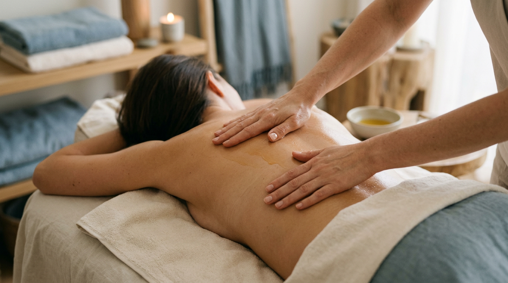

Services
Tailored to you
Each session is built around your goals—whether that's easing chronic tension, supporting athletic recovery, or simply carving out an hour of calm. I draw from several modalities and adjust pressure and focus to suit you.

- Relaxation massage Swedish-style massage with light pressure and flowing strokes to improve circulation and ease muscle tension. Ideal for stress relief and general wellness. 60 min — $95 Book it now
- Yulia's Therapeutic Massage A customized session that combines deep tissue, sports massage, and other techniques from my toolbox to address your body's needs. I recommend 60 minutes if you're focusing on specific areas rather than full body. For full-body work, 90 minutes or 2 hours are better suited. 60 min — $120 | 90 min — $160 | 2 hours — $195 Book it now
- Manual lymphatic drainage Gentle, rhythmic technique to support lymph flow and reduce swelling. Beneficial after surgery, for lymphedema management, or general detox and wellness. 60 min — $110 | 90 min — $150 Book it now
- Stretching session One-on-one assisted stretching to improve flexibility, range of motion, and recovery. Ideal as a stand-alone session or paired with massage. 1 hour — $100 Book it now
- Cupping session 30-minute focused cupping to address tension, stagnation, and tight fascia. I use static, gliding, or dynamic cupping. Lymphatic drainage with cups is also available. 30 min — $60 Book it now